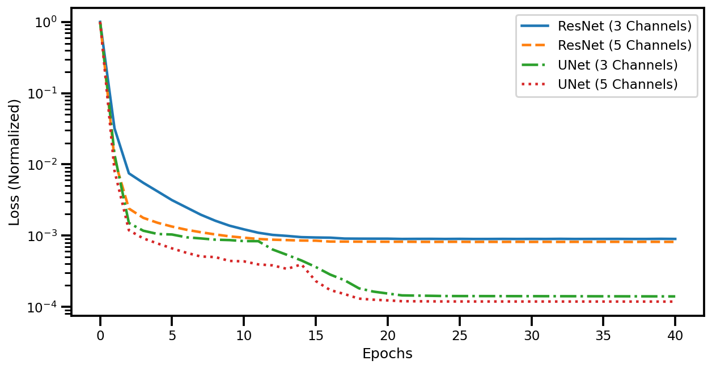
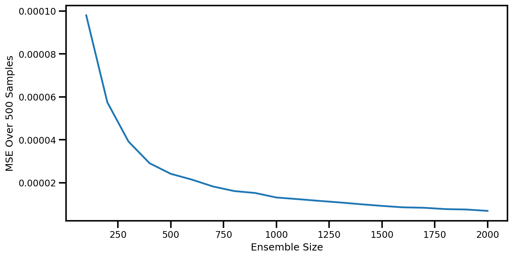

import numpy as np
# MATPLOTLIB Settings
import matplotlib as mpl
import matplotlib.pyplot as plt
%matplotlib inline
%config InlineBackend.figure_format = 'retina'
# SEABORN SETTINGS
import seaborn as sns
sns.set_context(context='talk',font_scale=0.7)
resnet_3ch = [
1.0000000,
0.0320479,
0.0074908,
0.0055149,
0.0041707,
0.0031478,
0.0024886,
0.0019676,
0.0016209,
0.0013790,
0.0012249,
0.0010980,
0.0010239,
0.0009911,
0.0009521,
0.0009416,
0.0009359,
0.0009095,
0.0009070,
0.0009064,
0.0009062,
0.0008983,
0.0009006,
0.0009013,
0.0008981,
0.0009009,
0.0008974,
0.0008977,
0.0008999,
0.0008981,
0.0008996,
0.0008984,
0.0009016,
0.0008981,
0.0008990,
0.0008995,
0.0009001,
0.0008983,
0.0008984,
0.0009022,
0.000899
]
resnet_5ch = [
1.0000000,
0.0116970,
0.0023993,
0.0017768,
0.0015141,
0.0013402,
0.0012096,
0.0011161,
0.0010400,
0.0009767,
0.0009355,
0.0008974,
0.0008769,
0.0008657,
0.0008531,
0.0008494,
0.0008253,
0.0008245,
0.0008222,
0.0008224,
0.0008201,
0.0008206,
0.0008185,
0.0008167,
0.0008180,
0.0008193,
0.0008158,
0.0008175,
0.0008165,
0.0008182,
0.0008161,
0.0008175,
0.0008164,
0.0008178,
0.0008164,
0.0008188,
0.0008180,
0.0008155,
0.0008189,
0.0008174,
0.0008166
]
unet_3ch = [
1.0000000,
0.0138225,
0.0015055,
0.0011722,
0.0010545,
0.0010368,
0.0009472,
0.0009136,
0.0008775,
0.0008657,
0.0008379,
0.0008361,
0.0006383,
0.0005370,
0.0004482,
0.0003625,
0.0002840,
0.0002364,
0.0001821,
0.0001639,
0.0001539,
0.0001449,
0.0001439,
0.0001430,
0.0001419,
0.0001418,
0.0001417,
0.0001416,
0.0001415,
0.0001414,
0.0001413,
0.0001412,
0.0001411,
0.0001410,
0.0001409,
0.0001408,
0.0001407,
0.0001406,
0.0001405,
0.0001404,
0.0001403,
]
unet_5ch = [
1.0000000,
0.0081427,
0.0011903,
0.0009156,
0.0007754,
0.0006621,
0.0005748,
0.0005093,
0.0005000,
0.0004414,
0.0004352,
0.0003946,
0.0003824,
0.0003411,
0.0003948,
0.0002301,
0.0001722,
0.0001512,
0.0001305,
0.0001261,
0.0001233,
0.0001201,
0.0001198,
0.0001195,
0.0001191,
0.0001191,
0.0001190,
0.0001190,
0.0001190,
0.0001189,
0.0001189,
0.0001189,
0.0001188,
0.0001188,
0.0001188,
0.0001187,
0.0001187,
0.0001187,
0.0001187,
0.0001186,
0.0001186,
]
fig, ax = plt.subplots(figsize=(10,5))
ax.plot(resnet_3ch, label="ResNet (3 Channels)")
ax.plot(resnet_5ch, label="ResNet (5 Channels)", linestyle="--")
ax.plot(unet_3ch, label="UNet (3 Channels)", linestyle="-.")
ax.plot(unet_5ch, label="UNet (5 Channels)", linestyle=":")
ax.set(yscale="log", xlabel="Epochs", ylabel="Loss (Normalized)")
plt.legend()
plt.show()
fig.savefig("mldrop_results.png")

err_samples = [
0.00009800, 0.00005746, 0.00003922, 0.00002910, 0.00002417, 0.00002147, 0.00001827, 0.00001614, 0.00001523, 0.00001313, 0.00001238, 0.00001158, 0.00001083, 0.00000999, 0.00000922, 0.00000855, 0.00000834, 0.00000773, 0.00000753, 0.00000690]
ensemble_size = np.arange(100, 2_100, 100)
ensemble_size[-1]
2000
fig, ax = plt.subplots(figsize=(10,5))
ax.plot(ensemble_size, err_samples)
ax.set(ylabel="MSE Over 500 Samples", xlabel="Ensemble Size")
plt.show()
fig.savefig("mldrop_results_err.png")
